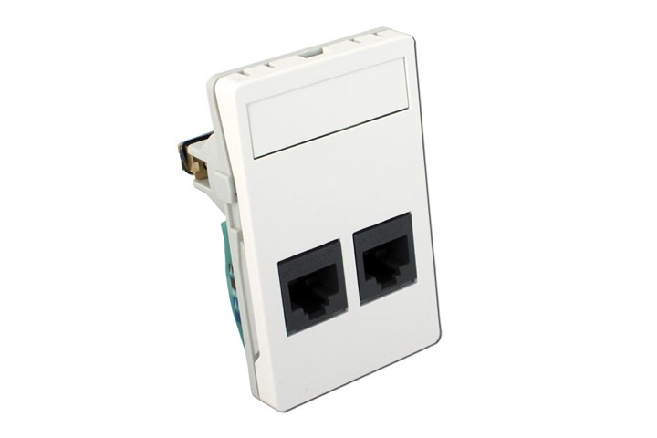
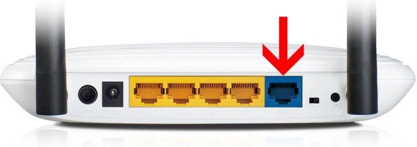

What you need
- Your own router. We don't recommend routers or modems from other internet providers, such as YouSee, TDC or Stofa, as they may not work.
- A LAN cable — usually included with the router.
- A power cable for the router.
How to set it up
-
Find the network socket in the wall of your home.

Note: Some homes have two sockets, and only one of them works. If in doubt, ask your neighbour which socket works for them.
-
Plug the LAN cable into the wall socket and into the router's input port.

The input port is the one that has a different colour from the others. See the router's manual if needed.
-
Connect to the router's wireless network.
The network name (SSID) and password are usually on a label underneath the router.
-
Do the router's first-time setup, as described in its manual.
If you're asked to choose a connection type, choose dynamic IP. For a TP-Link router, you can follow this video.
-
The internet should now work.
Mercusys AC1200
Must not be used at HCØ and Rasmus Rask Kollegiet.
Not working? Check the network status, or contact us on 63 14 44 57.
The guide is also available as a printable PDF.